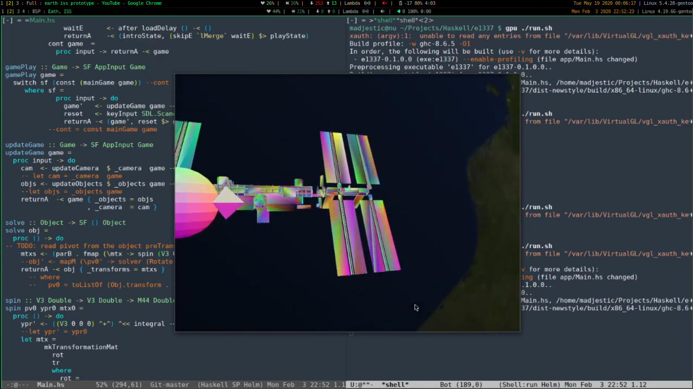

Making a space-sim game in Haskell.
#tags: haskell, opengl, frp, yampa, game.
Here’s a journal of a space game I’ve been working on. It is written in haskell, uses python for the pipeline, OpenGL 4.5+, Yampa, SDL2.
00: The beginning: a mandelbrot set.
Circa 2013, when project started, it looked like there was nothing suitable for using as a basis for a game.
There was Gloss which seemed too high level, compared to OpenGL; there was lambdacube, which was a thing on it’s own (but that replaces mastering Haskell and OpenGL with mastering somebodys interpretation); there was gl-piles, which looked interesting, but was suffering from the same problem as lambdacube - basically being wrappers. I don’t like wrappers. Wrappers do little good, aside from looking like they solve a (complex) problem, hiding (unnecessary?) complexity away, while creating more confusion, because the underlying reasoning is hiddent away, replaced with another, arguably more accessible reasoning.
But we digress.
I started of where I left off the Haskell-OpenGL-Tutorial:
It’s a simple, hard-coded scene with a fixed camera, 2 triangles with a material consisting from a vertex and a fragmen shader, with animated time variable fed to the shader.
At this point it was a like a desktop version of shader-toy. But why stopping there? There are cameras, animations and user-events, so let’s add these features:
01: Adding basic camera controls.
GitHub is a great source of code examples. Though there seemed to be no suitabke stackoverflow questions and answers, or tutorials, despite hours of searching that gave little to no useful results, after mosh-pitting together a number of code samples from awesome folks from GitHub, basic camera controlls were added.
No mouse input support yet. It feels like playing Doom with keyboard alone.
Loading anything more complex than a few triangles is begging for a model description and supporting authoring tools. There are many 3d modelling tools out there, I am most familiar with SideFX Houdini, so let’s try to use the free non-commercial version and Houdini’s native geo format as a model description that our application can read and fix the gaps in-between with python plumbing.
Let’s start with ~40K triangles:
Increase to ~50K tris:
loading ~250K took a few hours.
At this point it became clear that:
- ascii json file format is impractical for reading models of more than 100K tris. We need a quick binary serialization.
- It may be beneficial to use indexed geometry attributes.
- Project format description is highly desirable, as it gets tedious changing hard-coded scenes every time the project needs to change.
Let’s throw them in:
- Data.Store for binary serialization.
- Add attribute indexing.
- Use json for describing project files like so:
{
"project":
{
"name" : "Mandelbrot",
"resx" : 800,
"resy" : 600,
"models":
[
{ "path": "models/test.bgeo" }
]
}
}Basic model loading is working, let’s expand supported attributes: Color, Alpha, Normal, UVW: video
Add more test materials: video
It is obvious that a single object may need more than one material: video
Where’s many materials - there’s many objects. Expand the project description to support multiple objects:
{
"project":
{
"name" : "Eath, ISS",
"resx" : 800,
"resy" : 600,
"models":
[
{ "path": "models/earth.bgeo" },
{ "path": "models/moon.bgeo" },
{ "path": "models/iss_L1.bgeo" }
]
}
}Many objects with individual update loops, expand project description:
{
"project":
{
"name" : "Eath, ISS",
"resx" : 800,
"resy" : 600,
"models":
[
{ "path": "models/earth.bgeo" },
{ "path": "models/moon.bgeo" },
{ "path": "models/iss_L1.bgeo" }
]
}
}More testing: video
And more: video
Time to move beyond simple test scenes: video
After initial composition is done, set the scene to realistic proportions and distances:
 video
Realistic proportions reveal floating point precision issues, as seen in the video. Logarithmic scales seem to fix it:
Rainbow colors of the vertices reveal errors in attribute values. Let’s fix that. Logarithmic scales cause clipping artifacts. Also let’s further expand project format to support initial camera position:
{
"project":
{
"name" : "Eath, ISS",
"resx" : 800,
"resy" : 600,
"models":
[
{ "path": "models/earth.bgeo" },
{ "path": "models/moon.bgeo" },
{ "path": "models/iss_L1.bgeo" }
],
"camera": [1, 0, 0, 0,
0, 1, 0, 0,
0, 0, 1,-60,
0, 0, 0, 1]
}
}References:
https://learnopengl.com/ http://learnyouahaskell.com/